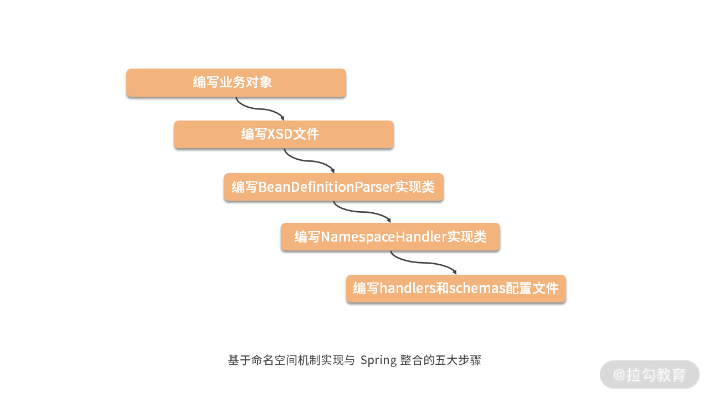

- 00 如何正确学习一款分库分表开源框架？.md.html
- 01 从理论到实践：如何让分库分表真正落地？.md.html
- 02 顶级项目：ShardingSphere 是一款什么样的 Apache 开源软件？.md.html
- 03 规范兼容：JDBC 规范与 ShardingSphere 是什么关系？.md.html
- 04 应用集成：在业务系统中使用 ShardingSphere 的方式有哪些？.md.html
- 05 配置驱动：ShardingSphere 中的配置体系是如何设计的？.md.html
- 06 数据分片：如何实现分库、分表、分库+分表以及强制路由？（上）.md.html
- 07 数据分片：如何实现分库、分表、分库+分表以及强制路由？（下）.md.html
- 08 读写分离：如何集成分库分表+数据库主从架构？.md.html
- 09 分布式事务：如何使用强一致性事务与柔性事务？.md.html
- 10 数据脱敏：如何确保敏感数据的安全访问？.md.html
- 11 编排治理：如何实现分布式环境下的动态配置管理？.md.html
- 12 从应用到原理：如何高效阅读 ShardingSphere 源码？.md.html
- 13 微内核架构：ShardingSphere 如何实现系统的扩展性？.md.html
- 14 分布式主键：ShardingSphere 中有哪些分布式主键实现方式？.md.html
- 15 解析引擎：SQL 解析流程应该包括哪些核心阶段？（上）.md.html
- 16 解析引擎：SQL 解析流程应该包括哪些核心阶段？（下）.md.html
- 17 路由引擎：如何理解分片路由核心类 ShardingRouter 的运作机制？.md.html
- 18 路由引擎：如何实现数据访问的分片路由和广播路由？.md.html
- 19 路由引擎：如何在路由过程中集成多种路由策略和路由算法？.md.html
- 20 改写引擎：如何理解装饰器模式下的 SQL 改写实现机制？.md.html
- 21 执行引擎：分片环境下 SQL 执行的整体流程应该如何进行抽象？.md.html
- 22 执行引擎：如何把握 ShardingSphere 中的 Executor 执行模型？（上）.md.html
- 23 执行引擎：如何把握 ShardingSphere 中的 Executor 执行模型？（下）.md.html
- 24 归并引擎：如何理解数据归并的类型以及简单归并策略的实现过程？.md.html
- 25 归并引擎：如何理解流式归并和内存归并在复杂归并场景下的应用方式？.md.html
- 26 读写分离：普通主从架构和分片主从架构分别是如何实现的？.md.html
- 27 分布式事务：如何理解 ShardingSphere 中对分布式事务的抽象过程？.md.html
- 28 分布式事务：ShardingSphere 中如何集成强一致性事务和柔性事务支持？（上）.md.html
- 29 分布式事务：ShardingSphere 中如何集成强一致性事务和柔性事务支持？（下）.md.html
- 30 数据脱敏：如何基于改写引擎实现低侵入性数据脱敏方案？.md.html
- 31 配置中心：如何基于配置中心实现配置信息的动态化管理？.md.html
- 32 注册中心：如何基于注册中心实现数据库访问熔断机制？.md.html
- 33 链路跟踪：如何基于 Hook 机制以及 OpenTracing 协议实现数据访问链路跟踪？.md.html
- 34 系统集成：如何完成 ShardingSphere 内核与 Spring+SpringBoot 的无缝整合？.md.html
- 35 结语：ShardingSphere 总结及展望.md.html
- 捐赠
34 系统集成：如何完成 ShardingSphere 内核与 Spring+SpringBoot 的无缝整合？
今天，我们将进入整个课程中最后一个模块——系统集成模块的介绍。这里所谓的系统集成，指的就是 ShardingSphere 和 Spring 框架的集成。
到目前为止，ShardingSphere 实现了两种系统集成机制：一种是命名空间（namespace）机制，即通过扩展 Spring Schema 来实现与 Spring 框架的集成；而另一种则是通过编写自定义的 starter 组件来完成与 Spring Boot 的集成。本课时我将分别讲解这两种系统集成机制。
基于系统集成模块，无论开发人员采用哪一种 Spring 框架，对于使用 ShardingSphere 而言都是零学习成本。
基于命名空间集成 Spring
从扩展性的角度讲，基于 XML Schema 的扩展机制也是非常常见和实用的一种方法。在 Spring 中，允许我们自己定义 XML 的结构，并且可以用自己的 Bean 解析器进行解析。通过对 Spring Schema 的扩展，ShardingSphere 可以完成与 Spring 框架的有效集成。
1.基于命名空间集成 Spring 的通用开发流程
基于命名空间机制实现与 Spring 的整合，开发上通常采用的是固定的一个流程，包括如下所示的五大步骤：

这些步骤包括：编写业务对象、编写 XSD 文件、编写 BeanDefinitionParser 实现类、编写 NamespaceHandler 实现类，以及编写 spring.handlers 和 spring.schemas 配置文件，我们来看看 ShardingSphere 中实现这些步骤的具体做法。
2.ShardingSphere 集成 Spring
ShardingSphere 中存在两个以“spring-namespace”结尾的代码工程，即 sharding-jdbc-spring-namespace 和 sharding-jdbc-orchestration-spring-namespace，显然后者关注的是编排治理相关功能的集成，相对比较简单。再因为命名空间机制的实现过程也基本一致，因此，我们以 sharding-jdbc-spring-namespace 工程为例展开讨论。
而在 sharding-jdbc-spring-namespace 工程中，又包含了对普通分片、读写分离和数据脱敏这三块核心功能的集成内容，它们的实现也都是采用了类似的方式，因此我们也不会重复进行说明，这里就以普通分片为例进行介绍。
首先，我们发现了一个专门用于与 Spring 进行集成的 SpringShardingDataSource 类，这个类就是业务对象类，如下所示：
public class SpringShardingDataSource extends ShardingDataSource {
public SpringShardingDataSource(final Map<String, DataSource> dataSourceMap, final ShardingRuleConfiguration shardingRuleConfiguration, final Properties props) throws SQLException {
super(dataSourceMap, new ShardingRule(shardingRuleConfiguration, dataSourceMap.keySet()), props);
}
}
可以看到这个 SpringShardingDataSource 类实际上只是对 ShardingDataSource 的一种简单封装，没有包含任何实际操作。
然后，我们来看配置项标签的定义类，这种类是一种简单的工具类，其作用就是定义标签的名称。在命名上，ShardingSphere 中的这些类都以“BeanDefinitionParserTag”结尾，例如如下所示的 ShardingDataSourceBeanDefinitionParserTag：
public final class ShardingDataSourceBeanDefinitionParserTag {
public static final String ROOT_TAG = "data-source";
public static final String SHARDING_RULE_CONFIG_TAG = sharding-rule";
public static final String PROPS_TAG = "props";
public static final String DATA_SOURCE_NAMES_TAG = "data-source-names";
public static final String DEFAULT_DATA_SOURCE_NAME_TAG = "default-data-source-name";
public static final String TABLE_RULES_TAG = "table-rules";
…
}
这里定义了一批 Tag 和一批 Attribute，我们不做 一 一 展开。可以对照如下所示的基于 XML 的配置示例来对这些定义的配置项进行理解：
<sharding:data-source id="shardingDataSource">
<sharding:sharding-rule data-source-names="ds0,ds1">
<sharding:table-rules>
<sharding:table-rule …/>
<sharding:table-rule …/>
…
</sharding:table-rules>
…
</sharding:sharding-rule>
</sharding:data-source>
然后，我们在 sharding-jdbc-spring-namespace 代码工程的 META-INF/namespace 文件夹下找到了对应的 sharding.xsd 文件，其基本结构如下所示：
<xsd:schema xmlns="http://shardingsphere.apache.org/schema/shardingsphere/sharding"
xmlns:xsd="http://www.w3.org/2001/XMLSchema"
xmlns:beans="http://www.springframework.org/schema/beans"
xmlns:encrypt="http://shardingsphere.apache.org/schema/shardingsphere/encrypt"
targetNamespace="http://shardingsphere.apache.org/schema/shardingsphere/sharding"
elementFormDefault="qualified" xmlns:xsi="http://www.w3.org/2001/XMLSchema-instance"
xsi:schemaLocation="http://shardingsphere.apache.org/schema/shardingsphere/encrypt http://shardingsphere.apache.org/schema/shardingsphere/encrypt/encrypt.xsd">
<xsd:import namespace="http://www.springframework.org/schema/beans" schemaLocation="http://www.springframework.org/schema/beans/spring-beans.xsd" />
<xsd:import namespace="http://shardingsphere.apache.org/schema/shardingsphere/encrypt" schemaLocation="http://shardingsphere.apache.org/schema/shardingsphere/encrypt/encrypt.xsd"/>
<xsd:element name="data-source">
<xsd:complexType>
<xsd:all>
<xsd:element ref="sharding-rule" />
<xsd:element ref="props" minOccurs="0" />
</xsd:all>
<xsd:attribute name="id" type="xsd:string" use="required" />
</xsd:complexType>
</xsd:element>
…
</xsd:schema>
可以看到对于“data-source”这个 element 而言，包含了“sharding-rule”和“props”这两个子 element，其中“props”不是必需的。同时，“data-source”还可以包含一个“id”属性，而这个属性则是必填的，我们在前面的配置示例中已经看到了这一点。而对于“sharding-rule”而言，则可以有很多内嵌的属性，sharding.xsd 文件中对这些属性都做了定义。
同时，我们应该注意到的是，sharding.xsd 中通过使用 xsd:import 标签还引入了两个 namespace，一个是 Spring 中的http://www.springframework.org/schema/beans，另一个则是 ShardingSphere 自身的http://shardingsphere.apache.org/schema/shardingsphere/encrypt，这个命名空间的定义位于与 sharding.xsd 同目录下的 encrypt.xsd文件中。
有了业务对象类，以及 XSD 文件的定义，接下来我们就来看看 NamespaceHandler 实现类 ShardingNamespaceHandler，如下所示：
public final class ShardingNamespaceHandler extends NamespaceHandlerSupport {
@Override
public void init() {
registerBeanDefinitionParser(ShardingDataSourceBeanDefinitionParserTag.ROOT_TAG, new ShardingDataSourceBeanDefinitionParser());
registerBeanDefinitionParser(ShardingStrategyBeanDefinitionParserTag.STANDARD_STRATEGY_ROOT_TAG, new ShardingStrategyBeanDefinitionParser());
…
}
}
可以看到这里也是直接使用了 registerBeanDefinitionParser 方法来完成标签项与具体的 BeanDefinitionParser 类之间的对应关系。我们来看这里的 ShardingDataSourceBeanDefinitionParser，其核心的 parseInternal 方法如下所示：
@Override
protected AbstractBeanDefinition parseInternal(final Element element, final ParserContext parserContext) {
//构建针对 SpringShardingDataSource 的 BeanDefinitionBuilder
BeanDefinitionBuilder factory = BeanDefinitionBuilder.rootBeanDefinition(SpringShardingDataSource.class);
//解析构造函数中的 DataSource 参数
factory.addConstructorArgValue(parseDataSources(element));
//解析构造函数中 ShardingRuleConfiguration 参数 factory.addConstructorArgValue(parseShardingRuleConfiguration(element));
//解析构造函数中 Properties 参数
factory.addConstructorArgValue(parseProperties(element, parserContext));
factory.setDestroyMethodName("close");
return factory.getBeanDefinition();
}
这里，我们自己定义了一个 BeanDefinitionBuilder 并将其绑定到前面定义的业务对象类 SpringShardingDataSource。然后，我们通过三个 addConstructorArgValue 方法的调用，分别为 SpringShardingDataSource 构造函数中所需的 dataSourceMap、shardingRuleConfiguration 以及 props 参数进行赋值。
我们再来进一步看一下上述方法中的 parseDataSources 方法，如下所示：
private Map<String, RuntimeBeanReference> parseDataSources(final Element element) {
Element shardingRuleElement = DomUtils.getChildElementByTagName(element, ShardingDataSourceBeanDefinitionParserTag.SHARDING_RULE_CONFIG_TAG);
List<String> dataSources = Splitter.on(",").trimResults().splitToList(shardingRuleElement.getAttribute(ShardingDataSourceBeanDefinitionParserTag.DATA_SOURCE_NAMES_TAG));
Map<String, RuntimeBeanReference> result = new ManagedMap<>(dataSources.size());
for (String each : dataSources) {
result.put(each, new RuntimeBeanReference(each));
}
return result;
}
基于前面介绍的配置示例，我们理解这段代码的作用是获取所配置的“ds0,ds1”字符串，并对其进行拆分，然后基于每个代表具体 DataSource 的名称构建 RuntimeBeanReference 对象并进行返回，这样就可以把在 Spring 容器中定义的其他 Bean 加载到 BeanDefinitionBuilder 中。
关于 ShardingDataSourceBeanDefinitionParser 中其他 parse 方法的使用，大家可以通过阅读对应的代码进行理解，处理方式都是非常类似的，就不再重复展开。
最后，我们需要在 META-INF 目录下提供spring.schemas 文件，如下所示：
http\://shardingsphere.apache.org/schema/shardingsphere/sharding/sharding.xsd=META-INF/namespace/sharding.xsd
http\://shardingsphere.apache.org/schema/shardingsphere/masterslave/master-slave.xsd=META-INF/namespace/master-slave.xsd
http\://shardingsphere.apache.org/schema/shardingsphere/encrypt/encrypt.xsd=META-INF/namespace/encrypt.xsd
同样，spring.handlers 的内容如下所示：
http\://shardingsphere.apache.org/schema/shardingsphere/sharding=org.apache.shardingsphere.shardingjdbc.spring.namespace.handler.ShardingNamespaceHandler
http\://shardingsphere.apache.org/schema/shardingsphere/masterslave=org.apache.shardingsphere.shardingjdbc.spring.namespace.handler.MasterSlaveNamespaceHandler
http\://shardingsphere.apache.org/schema/shardingsphere/encrypt=org.apache.shardingsphere.shardingjdbc.spring.namespace.handler.EncryptNamespaceHandler
至此，我们对 ShardingSphere 中基于命名空间机制与 Spring 进行系统集成的实现过程介绍完毕。
接下来，我们来看 ShardingSphere 中实现一个自定义 spring-boot-starter 的过程。
基于自定义 starter 集成 Spring Boot
与基于命名空间的实现方式一样，ShardingSphere 提供了 sharding-jdbc-spring-boot-starter 和 sharding-jdbc-orchestration-spring-boot-starter 这两个 starter 工程。篇幅关系，我们同样只关注于 sharding-jdbc-spring-boot-starter 工程。
对于 Spring Boot 工程，我们首先来关注 META-INF 文件夹下的 spring.factories 文件。Spring Boot 中提供了一个 SpringFactoriesLoader 类，该类的运行机制类似于 “13 | 微内核架构：ShardingSphere如何实现系统的扩展性？” 中所介绍的 SPI 机制，只不过以服务接口命名的文件是放在 META-INF/spring.factories 文件夹下，对应的 Key 为 EnableAutoConfiguration。SpringFactoriesLoader 会查找所有 META-INF/spring.factories 目录下的配置文件，并把 Key 为 EnableAutoConfiguration 所对应的配置项通过反射实例化为配置类并加载到容器。在 sharding-jdbc-spring-boot-starter 工程中，该文件内容如下所示：
org.springframework.boot.autoconfigure.EnableAutoConfiguration=\
org.apache.shardingsphere.shardingjdbc.spring.boot.SpringBootConfiguration
现在这里的 EnableAutoConfiguration 配置项指向了 SpringBootConfiguration 类。也就是说，这个类在 Spring Boot 启动过程中都能够通过 SpringFactoriesLoader 被加载到运行时环境中。
1.SpringBootConfiguration 中的注解
接下来，我们就来到这个 SpringBootConfiguration，首先关注于加在该类上的各种注解，如下所示：
@Configuration
@ComponentScan("org.apache.shardingsphere.spring.boot.converter")
@EnableConfigurationProperties({
SpringBootShardingRuleConfigurationProperties.class,
SpringBootMasterSlaveRuleConfigurationProperties.class, SpringBootEncryptRuleConfigurationProperties.class, SpringBootPropertiesConfigurationProperties.class})
@ConditionalOnProperty(prefix = "spring.shardingsphere", name = "enabled", havingValue = "true", matchIfMissing = true)
@AutoConfigureBefore(DataSourceAutoConfiguration.class)
@RequiredArgsConstructor
public class SpringBootConfiguration implements EnvironmentAware
首先，我们看到了一个 @Configuration 注解。这个注解不是 Spring Boot 引入的新注解，而是属于 Spring 容器管理的内容。该注解表明这个类是一个配置类，可以启动组件扫描，用来将带有 @Bean 注解的实体进行实例化 bean。
然后，我们又看到了一个同样属于 Spring 容器管理范畴的老注解，即 @ComponentScan 注解。@ComponentScan 注解就是扫描基于 @Component 等注解所标注的类所在包下的所有需要注入的类，并把相关 Bean 定义批量加载到IoC容器中。
显然，Spring Boot 应用程序中同样需要这个功能。注意到，这里需要进行扫描的包路径位于另一个代码工程 sharding-spring-boot-util 的 org.apache.shardingsphere.spring.boot.converter 包中。
然后，我们看到了一个 @EnableConfigurationProperties 注解，该注解的作用就是使添加了 @ConfigurationProperties 注解的类生效。在 Spring Boot 中，如果一个类只使用了 @ConfigurationProperties 注解，然后该类没有在扫描路径下或者没有使用 @Component 等注解，就会导致无法被扫描为 bean，那么就必须在配置类上使用 @EnableConfigurationProperties 注解去指定这个类，才能使 @ConfigurationProperties 生效，并作为一个 bean 添加进 spring 容器中。这里的 @EnableConfigurationProperties 注解包含了四个具体的 ConfigurationProperties。以 SpringBootShardingRuleConfigurationProperties 为例，该类的定义如下所示，可以看到，这里直接继承了 sharding-core-common 代码工程中的 YamlShardingRuleConfiguration：
@ConfigurationProperties(prefix = "spring.shardingsphere.sharding")
public class SpringBootShardingRuleConfigurationProperties extends YamlShardingRuleConfiguration {
}
SpringBootConfiguration 上的下一个注解是 @ConditionalOnProperty，该注解的作用在于只有当所提供的属性属于 true 时才会实例化 Bean。
最后一个与自动加载相关的注解是 @AutoConfigureBefore，如果该注解用在类名上，其作用是标识在加载当前类之前需要加载注解中所设置的配置类。基于这一点，我们明确在加载 SpringBootConfiguration 类之前，Spring Boot 会先加载 DataSourceAutoConfiguration。这一步的作用与我们后面要看到的创建各种 DataSource 相关。
2.SpringBootConfiguration 中的功能
介绍完这些注解之后，我们来看一下 SpringBootConfiguration 类所提供的功能。
我们知道对于 ShardingSphere 而言，其对外的入口实际上就是各种 DataSource，因此 SpringBootConfiguration 中提供了一批创建不同 DataSource 的入口方法，例如如下所示的 shardingDataSource 方法：
@Bean
@Conditional(ShardingRuleCondition.class)
public DataSource shardingDataSource() throws SQLException {
return ShardingDataSourceFactory.createDataSource(dataSourceMap, new ShardingRuleConfigurationYamlSwapper().swap(shardingRule), props.getProps());
}
该方法上添加了两个注解，一个是常见的 @Bean，另一个则是 @Conditional 注解，该注解的作用是只有满足指定条件的情况下才能加载这个 Bean。我们看到 @Conditional 注解中设置了一个 ShardingRuleCondition，该类如下所示：
public final class ShardingRuleCondition extends SpringBootCondition {
@Override
public ConditionOutcome getMatchOutcome(final ConditionContext conditionContext, final AnnotatedTypeMetadata annotatedTypeMetadata) {
boolean isMasterSlaveRule = new MasterSlaveRuleCondition().getMatchOutcome(conditionContext, annotatedTypeMetadata).isMatch();
boolean isEncryptRule = new EncryptRuleCondition().getMatchOutcome(conditionContext, annotatedTypeMetadata).isMatch();
return isMasterSlaveRule || isEncryptRule ? ConditionOutcome.noMatch("Have found master-slave or encrypt rule in environment") : ConditionOutcome.match();
}
}
可以看到 ShardingRuleCondition 是一个标准的 SpringBootCondition，实现了 getMatchOutcome 抽象方法。我们知道 SpringBootCondition 的作用就是代表一种用于注册类或加载 Bean 的条件。ShardingRuleCondition 类的实现上分别调用了 MasterSlaveRuleCondition 和 EncryptRuleCondition 来判断是否满足这两个 SpringBootCondition。显然，对于 ShardingRuleCondition 而言，只有在两个条件都不满足的情况下才应该被加载。对于 masterSlaveDataSource 和 encryptDataSource 这两个方法而言，处理逻辑也类似，不做赘述。
最后，我们注意到 SpringBootConfiguration 还实现了 Spring 的 EnvironmentAware 接口。在 Spring Boot 中，当一个类实现了 EnvironmentAware 接口并重写了其中的 setEnvironment 方法之后，在代码工程启动时就可以获得 application.properties 配置文件中各个配置项的属性值。SpringBootConfiguration 中所重写的 setEnvironment 方法如下所示：
@Override
public final void setEnvironment(final Environment environment) {
String prefix = "spring.shardingsphere.datasource.";
for (String each : getDataSourceNames(environment, prefix)) {
try {
dataSourceMap.put(each, getDataSource(environment, prefix, each));
} catch (final ReflectiveOperationException ex) {
throw new ShardingException("Can't find datasource type!", ex);
} catch (final NamingException namingEx) {
throw new ShardingException("Can't find JNDI datasource!", namingEx);
}
}
}
这里的代码逻辑是获取“spring.shardingsphere.datasource.name”或“spring.shardingsphere.datasource.names”配置项，然后根据该配置项中所指定的 DataSource 信息构建新的 DataSource 并加载到 dataSourceMap 这个 LinkedHashMap。这点我们可以结合课程案例中的配置项来加深理解：
spring.shardingsphere.datasource.names=ds0,ds1
spring.shardingsphere.datasource.ds0.type=com.alibaba.druid.pool.DruidDataSource
spring.shardingsphere.datasource.ds0.driver-class-name=com.mysql.jdbc.Driver
spring.shardingsphere.datasource.ds0.url=jdbc:mysql://localhost/ds0
spring.shardingsphere.datasource.ds0.username=root
spring.shardingsphere.datasource.ds0.password=root
spring.shardingsphere.datasource.ds1.type=com.alibaba.druid.pool.DruidDataSource
spring.shardingsphere.datasource.ds1.driver-class-name=com.mysql.jdbc.Driver
spring.shardingsphere.datasource.ds1.url=jdbc:mysql://localhost/ds1
spring.shardingsphere.datasource.ds1.username=root
spring.shardingsphere.datasource.ds1.password=root
至此，整个 SpringBootConfiguration 的实现过程介绍完毕。
从源码解析到日常开发
今天所介绍的关于 ShardingSphere 集成 Spring 的实现方法可以直接导入到日常开发过程中。如果我们需要实现一个自定义的框架或工具类，从面向开发人员的角度讲，最好能与 Spring 等主流的开发框架进行集成，以便提供最低的学习和维护成本。与 Spring 框架的集成过程都有固定的开发步骤，我们按照今天课时中所介绍的内容，就可以模仿 ShardingSphere 中的做法自己实现这些步骤。
小结与预告
本课时是 ShardingSphere 源码解析的最后一部分内容，我们围绕如何集成 Spring 框架这一主题对 ShardingSphere 的具体实现方法做了展开。ShardingSphere 在这方面提供了一种可以直接进行参考的模版式的实现方法，包括基于命名空间的 Spring 集成以及基于 starter的Spring Boot 集成方法。
这里给你留一道思考题：在 ShardingSphere 集成 Spring Boot 时，SpringBootConfiguration 类上的注解有哪些，分别起到了什么作用？
讲完 ShardingSphere 源码解析部分内容之后，下一课时是整个课程的最后一讲，我们将对 ShardingSphere 进行总结，并对它的后续发展进行展望。
© 2019 - 2023 Liangliang Lee. Powered by gin and hexo-theme-book.